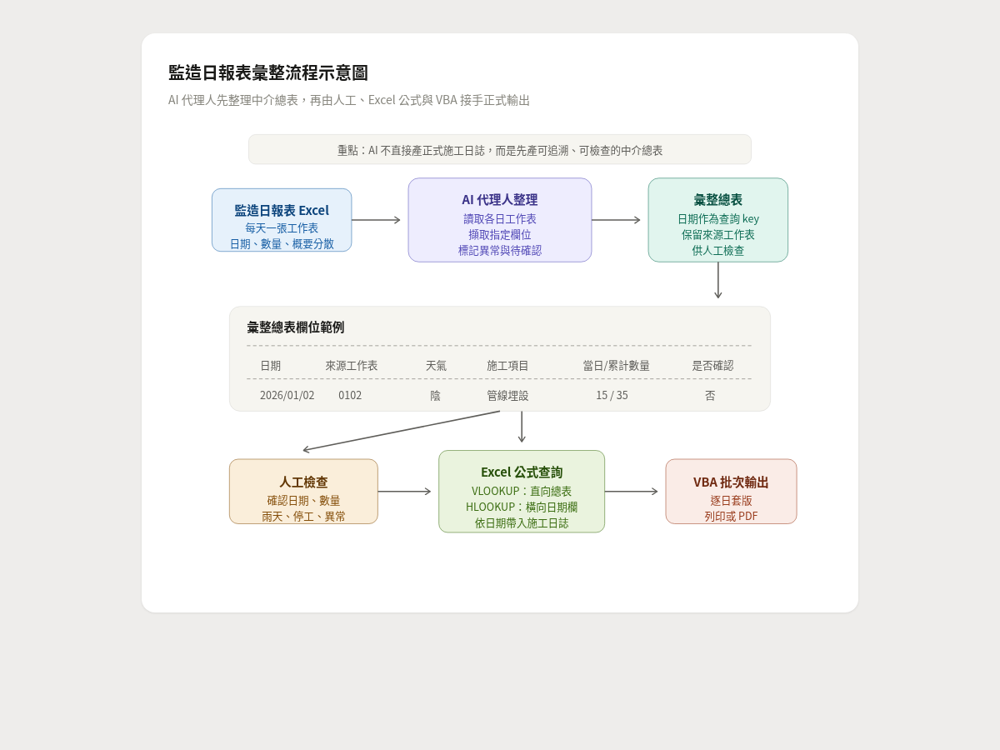
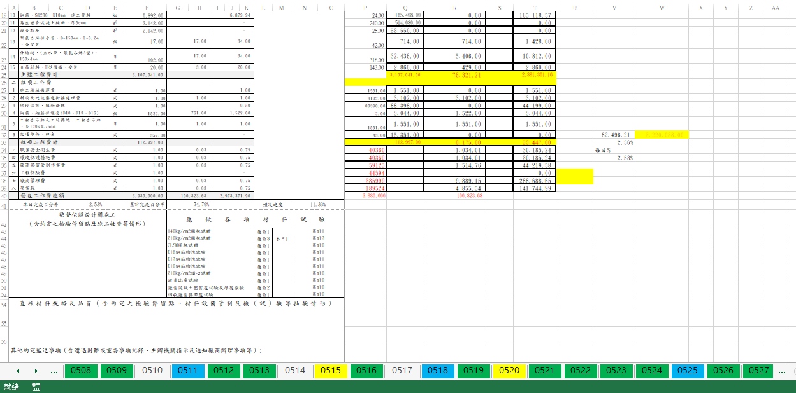
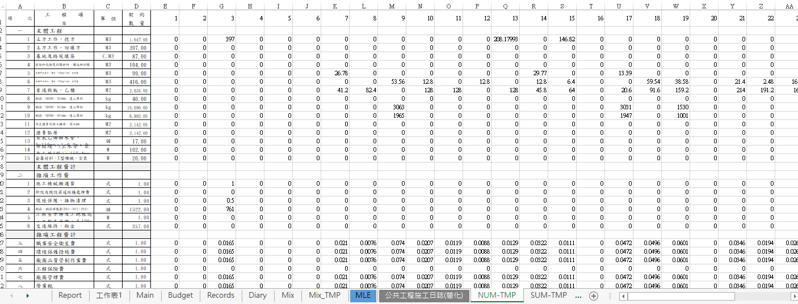
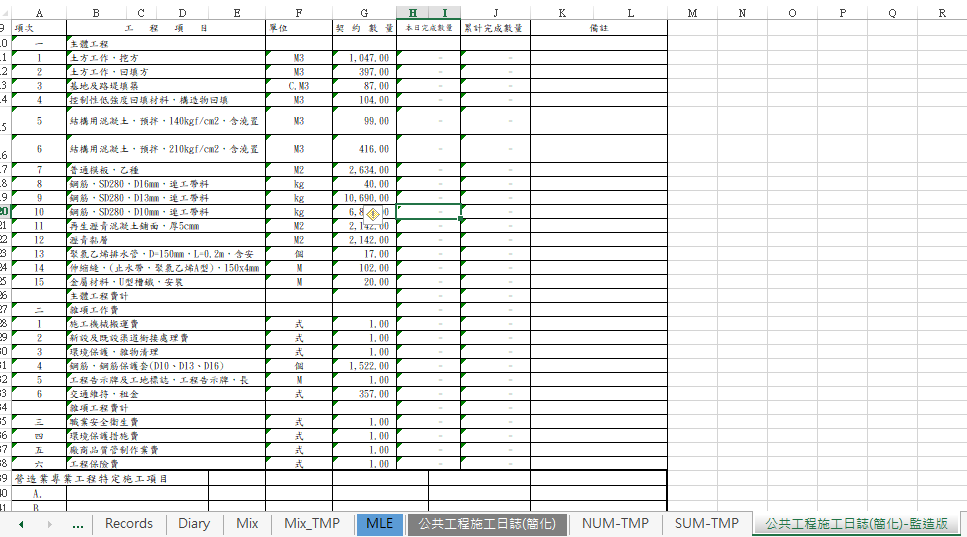

AI代理人@施工日誌彙整
想解決的問題
工程現場每天都會填寫監造日報表，有些案件是一個 Excel 檔裡面每天一張工作表。
後續如果要製作施工日誌，常常需要引用監造日報表裡的資料，例如：
- 日期
- 天氣
- 施工項目
- 當日完成數量
- 累計完成數量
- 施工概要
- 停工、雨天或特殊備註
如果每天都人工打開不同工作表，逐項複製到施工日誌，不但耗時間，也容易貼錯日期、貼錯數量或漏掉內容。
這類工作不難，但很煩，而且很適合先讓 AI 代理人協助整理。
不要一開始就叫 AI 直接產施工日誌
一開始很容易想成：
既然 AI 代理人可以讀 Excel，那就直接叫它幫我產施工日誌。
但實務上我不建議一開始就這樣做。
因為施工日誌是正式文件，除了資料內容，還牽涉：
- 固定表格格式
- 日期欄位
- 天氣欄位
- 工項與數量欄位
- 累計數量
- 備註文字
- 列印版面
- 後續批次輸出
如果直接讓 AI 產正式施工日誌，表面上看起來很快，但後續只要某一天資料錯了，就很難追問題是出在原始日報、AI 擷取、公式引用，還是表單格式。
所以比較穩的作法是：
AI 代理人先整理出一張「監造日報彙整總表」，
施工日誌再用 Excel 公式去查詢這張總表。
流程示意圖

AI 代理人實際協助的部分
AI 代理人主要負責前段的資料整理。
可以請它做：
- 讀取監造日報表 Excel。
- 判斷每一張工作表代表哪一天。
- 從每天的日報表中擷取指定欄位。
- 整理成一張總表。
- 標記空白日、雨天、停工日或格式異常的資料。
- 輸出成可檢查的 XLSX。
彙整總表大概會長這樣：
| 日期 | 來源工作表 | 天氣 | 施工項目 | 當日數量 | 累計數量 | 施工概要 | 備註 | 是否需人工確認 |
|---|---|---|---|---|---|---|---|---|
| 2026/01/01 | 0101 | 晴 | 管線開挖 | 20 | 20 | 今日進行管線開挖 | 否 | |
| 2026/01/02 | 0102 | 陰 | 管線埋設 | 15 | 35 | 今日進行管線埋設 | 否 | |
| 2026/01/03 | 0103 | 雨 | 停工 | 0 | 35 | 因雨停工 | 雨天 | 是 |
這張表不是正式成果，而是中介資料。
重點是資料集中、來源清楚、方便人工檢查。
施工日誌怎麼引用總表
當彙整總表確認後，施工日誌模板就可以用 Excel 公式去查詢資料。
常見做法有兩種。
方式一：用 VLOOKUP
如果彙整總表是直向資料，一列代表一天，就可以用日期查資料。
例如施工日誌輸入日期在：
1 | B2 = 2026/01/02 |
彙整總表格式如下：
| A欄 | B欄 | C欄 | D欄 | E欄 | F欄 |
|---|---|---|---|---|---|
| 日期 | 天氣 | 施工項目 | 當日數量 | 累計數量 | 施工概要 |
施工日誌可以用：
1 | =VLOOKUP($B$2,監造日報彙整!$A:$F,2,FALSE) |
帶出天氣。
1 | =VLOOKUP($B$2,監造日報彙整!$A:$F,3,FALSE) |
帶出施工項目。
1 | =VLOOKUP($B$2,監造日報彙整!$A:$F,4,FALSE) |
帶出當日數量。
1 | =VLOOKUP($B$2,監造日報彙整!$A:$F,5,FALSE) |
帶出累計數量。
1 | =VLOOKUP($B$2,監造日報彙整!$A:$F,6,FALSE) |
帶出施工概要。
方式二：用 HLOOKUP
如果施工日誌模板是橫向日期欄，例如每一天一欄，就可以用 HLOOKUP。
例如彙整表第一列是日期：
| B欄 | C欄 | D欄 | |
|---|---|---|---|
| 日期 | 2026/01/01 | 2026/01/02 | 2026/01/03 |
| 天氣 | 晴 | 陰 | 雨 |
| 施工項目 | 管線開挖 | 管線埋設 | 停工 |
| 當日數量 | 20 | 15 | 0 |
| 累計數量 | 20 | 35 | 35 |
若施工日誌日期在：
1 | B2 = 2026/01/02 |
可以用：
1 | =HLOOKUP($B$2,監造日報彙整!$B$1:$D$5,2,FALSE) |
帶出天氣。
1 | =HLOOKUP($B$2,監造日報彙整!$B$1:$D$5,3,FALSE) |
帶出施工項目。
1 | =HLOOKUP($B$2,監造日報彙整!$B$1:$D$5,4,FALSE) |
帶出當日數量。
1 | =HLOOKUP($B$2,監造日報彙整!$B$1:$D$5,5,FALSE) |
帶出累計數量。
格式內容怎麼安排
我會建議整個 Excel 至少分成三張工作表。
1. 原始資料或來源說明
這張表記錄資料來源，例如：
- 原始監造日報表檔名
- 工作表名稱
- 對應日期
- 是否成功讀取
- 是否有異常
用途是後續追資料來源。
2. 監造日報彙整總表
這張是 AI 代理人主要產出的中介表。
建議欄位包含：
| 欄位 | 說明 |
|---|---|
| 日期 | 作為後續公式查詢的 key |
| 來源工作表 | 保留資料來源 |
| 天氣 | 從日報表擷取 |
| 施工項目 | 從日報表擷取 |
| 單位 | 若有數量項目可保留 |
| 當日數量 | 本日完成數量 |
| 累計數量 | 累計完成數量 |
| 施工概要 | 日報表文字內容 |
| 備註 | 雨天、停工、異常資料 |
| 是否需人工確認 | 是 / 否 |
這張表要盡量保持乾淨，方便公式查詢。
3. 施工日誌模板
這張表保留原本施工日誌格式。
例如：
- 工程名稱
- 日期
- 天氣
- 施工項目
- 本日完成數量
- 累計完成數量
- 施工概要
- 備註
- 簽名欄
- 頁尾或列印範圍
模板內只要設定日期，其餘欄位就用 VLOOKUP 或 HLOOKUP 從彙整總表帶入。
這樣之後只要改日期，就可以快速切換不同天的施工日誌內容。
操作流程
整個流程可以整理成這樣：
準備監造日報表 Excel
監造日報表可能是一個檔案多張工作表，也可能是多個日報檔案。
提供施工日誌模板
讓 AI 代理人知道後續需要哪些欄位，例如日期、天氣、施工項目、數量與施工概要。
AI 代理人讀取監造日報表
AI 逐張工作表讀取資料，判斷日期與欄位位置。
AI 產出監造日報彙整總表
將分散在各工作表的資料整理成一張總表，並保留來源工作表。
人工檢查彙整總表
檢查日期、數量、施工概要、停工日、雨天與異常標記。
施工日誌模板用公式查詢
使用 VLOOKUP 或 HLOOKUP 依日期帶出對應資料。
VBA 批次輸出
若需要大量列印或輸出 PDF，可以用 VBA 依日期逐日套用模板並批次產出。
實務上的分工
| 工具 | 負責內容 |
|---|---|
| AI 代理人 | 讀取監造日報表，整理成彙整總表 |
| 人工 | 檢查日期、數量、異常與備註 |
| Excel 公式 | 依日期查詢資料並帶入施工日誌 |
| VBA | 批次列印或輸出 PDF |
| 工程人員 | 最後確認正式文件 |
實務操作畫面



小結
這個案例的重點不是讓 AI 代理人直接產生施工日誌。
比較穩的做法是：
AI 代理人先把每天的監造日報表整理成一張總表，
人工確認總表內容，
Excel 用 VLOOKUP 或 HLOOKUP 查詢資料，
VBA 再負責批次列印或輸出。
這樣資料來源清楚，錯誤也比較容易追。
AI 負責處理重複整理工作，人則保留最後確認與判斷。